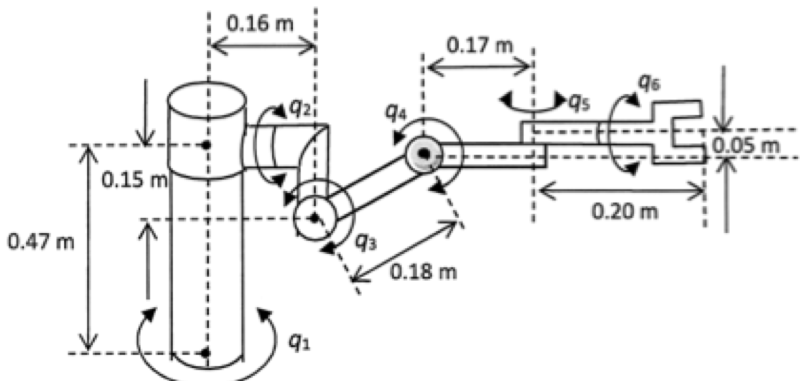

EE6221 Final — Step 2: Guided mock A
A full paper in the official format: 5 questions, 20 marks each, in the fixed slot order. Each part is broken into the steps a marker looks for, and every step checks itself. Work each step on paper first, then type the number (fractions such as 1/6 are accepted). A hint recalls the method; the worked line unlocks after your first check. Steps marked written are self-marked against a model answer. Give numbers to 4 decimal places.
All numbers are new except Q1, which reuses the 2023-24 S2 arm figure (you solved it once in Quiz 1 mock 5; here the point is speed and the transform matrices). The two most recent official papers are held back for steps 7 and 8.
Q1 · D-H 20 marks

(a) Link-coordinate diagram 12 marks
written 1. Draw frames 0–6.
Model answer
Frame 0 at the base on the waist axis, \(z_0\) up. \(z_1\) along the q2 pipe (horizontal, pointing right), \(y_1\) up. Frame 2 at the q3 centre, \(x_2\) down the 0.15 m drop, \(z_2\) along the q3 axis. \(z_3\parallel z_2\) at q4. \(z_4\) vertical on the q5 axis, origin 0.17 m from q4. \(z_5\) horizontal (the q6 roll axis), raised 0.05 m. Frame 6 at the tool tip, \(z_6\) the approach. Rubric: 6 marks for each \(z_{k-1}\) on joint \(k\)'s axis, 3 for the \(x\) axes on the common normals, 1 for right-handed \(y\), 1 base, 1 tool.(b) Parameters and transforms 8 marks
1. Row 1: \(d_1=\) m, \(a_1=\) m
Hint
\(d\) runs along the previous \(z\); \(a\) runs along the new \(x\).Worked line
The 0.47 m column lies along \(z_0\), so \(d_1=0.47\); \(z_0\) and \(z_1\) intersect, so \(a_1=0\).2. Row 2: \(d_2=\) m, \(a_2=\) m
Hint
Which run lies along the q2 pipe (\(z_1\)), and which along \(x_2\)?Worked line
The 0.16 m run is along \(z_1\) (a \(d\)); the 0.15 m drop is along \(x_2\) (an \(a\)). Swapping them is the most common lost mark on this arm.3. Rows 3–4: \(a_3=\) m, \(a_4=\) m
Worked line
The 0.18 m link and the 0.17 m horizontal link both lie along the new \(x\) axes, so \(a_3=0.18\), \(a_4=0.17\), with \(d_3=d_4=0\).4. Rows 5–6: \(d_5=\) m, \(d_6=\) m
Worked line
The 0.05 m raise is along \(z_4\) (vertical), so it is \(d_5\), not \(a_5\). The 0.20 m to the tip is along \(z_5\): \(d_6=0.20\).5. Sanity check. At \(q=(90^\circ,-90^\circ,90^\circ,0,90^\circ,0)\) the arm is stretched out horizontally. Tool tip \(x=\) m, \(z=\) m
Hint
Add every horizontal run for \(x\); for \(z\), start at the column height and add the vertical offsets with their signs.Worked line
\(x=0.16+0.18+0.17+0.20=0.71\), \(z=0.47-0.15+0.05=0.37\). Multiplying the six D-H matrices of your table gives the same point; if yours does not, a row is wrong.written 6. Write the \(\alpha\) column and \(T^1_0\), \(T^2_1\), \(T^3_2\).
Model answer
\(\alpha=(\pi/2,\ \pi/2,\ 0,\ -\pi/2,\ \pi/2,\ 0)\). With \(T^k_{k-1}=\begin{bmatrix}C_k&-\cos\alpha_kS_k&\sin\alpha_kS_k&a_kC_k\\S_k&\cos\alpha_kC_k&-\sin\alpha_kC_k&a_kS_k\\0&\sin\alpha_k&\cos\alpha_k&d_k\\0&0&0&1\end{bmatrix}\): \[T^1_0=\begin{bmatrix}C_1&0&S_1&0\\S_1&0&-C_1&0\\0&1&0&0.47\\0&0&0&1\end{bmatrix},\ T^2_1=\begin{bmatrix}C_2&0&S_2&0.15C_2\\S_2&0&-C_2&0.15S_2\\0&1&0&0.16\\0&0&0&1\end{bmatrix},\ T^3_2=\begin{bmatrix}C_3&-S_3&0&0.18C_3\\S_3&C_3&0&0.18S_3\\0&0&1&0\\0&0&0&1\end{bmatrix}\]Your attempt, graded 2026-11-24: 12 / 20 (the three matrices were left blank). Scan: attempts/final-mock-a-q1-2026-11-24.jpg. Graded against your own frames, with the mock 5 rubric. In the scan, ↗ is read as "into the page" and ↙ as "out of the page", the usual way to sketch a third axis. Your \(\theta_1\)–\(\theta_3\) and \(\alpha_1\)–\(\alpha_3\) all match that reading.

Visual comparison
(a) Diagram: 9 / 12
- \(z\) on the joint axes, 5/6. \(z_0\)–\(z_4\) are correct. You drew \(z_5\) below the arm, but the q6 roll axis is 0.05 m above the 0.17 m link.
- \(x\) on the common normals, with origins, 2/3. \(x_1\), \(x_2\) (down the 0.15 m drop) and \(x_3\) are correct. Frame 4's origin must sit on the q5 axis, 0.17 m from q4. Frame 5's origin must be 0.05 m up \(z_4\).
- Right-handed \(y\), 0/1. \(y_0\), \(y_1\), \(y_2\) and \(y_4\) are each reversed. Check with \(y=z\times x\): in frame 1, \(z_1\) (right) \(\times\) \(x_1\) (into the page) points up, but you drew \(y_1\) down. Convention-dependent: if your ↗ meant "out of the page", the \(y\) axes are fine, but then \(\theta_1\), \(\alpha_1\) and \(\alpha_2\) change sign. Either way, the drawing and the table disagree.
- Base frame 1/1. Tool frame (\(z_6\) is the approach direction) 1/1.
(b) Table: 3 / 8 (the mock 5 rubric covers only the table)
- Rows 1–3 are correct, 3/3. Your row 2 has \(d_2=0.16\) and \(a_2=0.15\), so you avoided the usual swap.
- Row 4 is wrong. \(a_4=0\) should be 0.17: the common normal runs from the q4 axis to the q5 axis. Your \(\alpha_4=-90^\circ\) turns \(z_4\) horizontal. With your \(x_4\) pointing right and \(z_4\) up, \(\alpha_4=+90^\circ\).
- Row 5 is wrong. \(d_5=0.2\) should be 0.05, the raise along \(z_4\). Also, \(\alpha_5=0\) cannot be right, because \(z_4\) (up) is perpendicular to \(z_5\) (right). With your \(x_5\), \(\alpha_5=-90^\circ\).
- Row 6 is blank. It should be \(\theta_6=q_6\), \(d_6=0.20\), \(a_6=0\), \(\alpha_6=0\). The 0.20 m you put in row 5 belongs here.
- Variables identified, 0/1. Your \(\theta\) column holds only the angles of the sketched pose. Write \(\theta_k=q_k\).
- \(\alpha\) signs consistent with the drawing, 0/1, because of \(\alpha_4\) and \(\alpha_5\).
- \(T^1_0\), \(T^2_1\), \(T^3_2\) were left blank, which is not the same as wrong. In the real paper they share these 8 marks. Your formula \(T^k_{k-1}=R(\theta_k)\,T(d_k)\,T(a_k)\,R(\alpha_k)\) is in the right order.
Corrected table on your frames (checked numerically):
| k | \(\theta\) | d (m) | a (m) | \(\alpha\) |
|---|---|---|---|---|
| 1 | \(q_1\) | 0.47 | 0 | \(90^\circ\) |
| 2 | \(q_2\) | 0.16 | 0.15 | \(-90^\circ\) |
| 3 | \(q_3\) | 0 | 0.18 | 0 |
| 4 | \(q_4\) | 0 | 0.17 | \(+90^\circ\) |
| 5 | \(q_5\) | 0.05 | 0 | \(-90^\circ\) |
| 6 | \(q_6\) | 0.20 | 0 | 0 |
Check at your sketched pose, \(q=(90^\circ,-90^\circ,-90^\circ,0,-90^\circ,0)\). The corrected table puts the tip at \((0.71,\,0,\,0.37)\) m, which equals \((0.16+0.18+0.17+0.20,\ 0,\ 0.47-0.15+0.05)\), with \(z_6\) pointing right. Your table as written puts it at \((0.54,\,0,\,0.32)\): both the 0.17 and the 0.05 are missing.
The three matrices with this \(\alpha\) column: \[T^1_0=\begin{bmatrix}C_1&0&S_1&0\\S_1&0&-C_1&0\\0&1&0&0.47\\0&0&0&1\end{bmatrix},\ T^2_1=\begin{bmatrix}C_2&0&-S_2&0.15C_2\\S_2&0&C_2&0.15S_2\\0&-1&0&0.16\\0&0&0&1\end{bmatrix},\ T^3_2=\begin{bmatrix}C_3&-S_3&0&0.18C_3\\S_3&C_3&0&0.18S_3\\0&0&1&0\\0&0&0&1\end{bmatrix}\] (The model answer above has \(\alpha_2=+90^\circ\) because it points \(z_2\) out of the page. Your \(z_2\) points into the page, so yours is \(-90^\circ\). Both are valid.)
Diagnosis. This is a concept gap, not a slip. The 0.17 and 0.05 offsets were dropped, and the 0.20 moved up a row. You also put frame 4 at q4 instead of on the q5 axis. Rule: before you finish the table, tick each dimension in the figure into exactly one \(d\) or \(a\) cell (here there are 7 numbers and 6 rows). Also, when two consecutive \(z\) axes are perpendicular, \(\alpha=\pm90^\circ\), never 0.
Retry (answer on paper first): keep your frames, but the gripper axis is 0.05 m below the 0.17 m link and the tool length is 0.25 m. Write rows 4–6.
Row 4: \(q_4,\ 0,\ 0.17,\ +90^\circ\). Row 5: \(q_5,\ -0.05,\ 0,\ -90^\circ\) (with \(z_4\) still up, a drop is a negative \(d\)). Row 6: \(q_6,\ 0.25,\ 0,\ 0\).Q2 · Robot control 20 marks
(a) Computed torque, free motion 9 marks
\(f=0\), \(d_1=d_2=0\). Design a computed-torque controller that is overdamped with \(\zeta=1.2\).
1. Largest allowed \(\omega_n\) (rad/s):
Hint
\(\omega_n\le0.5\,\omega_{res}\), with the lowest resonance.Worked line
\(0.5\times12=6\) rad/s.2. \(k_v=\) \(k_p=\)
Worked line
\(k_v=2(1.2)(6)=14.4\), \(k_p=6^2=36\), the same for all three joints.written 3. Write \(\alpha\) and \(\beta\).
Model answer
\[\alpha=\begin{bmatrix}3+\cos q_2&1&0\\1&1&0\\0&0&8\end{bmatrix},\qquad \beta=\begin{bmatrix}-2\dot q_1\dot q_2\sin q_2+15\cos q_1\\ \dot q_1^2\sin q_2+5\cos(q_1+q_2)\\ 4\dot q_3+78.4\end{bmatrix}\] The \(\ddot q_2\) in the first equation and the \(\ddot q_1\) in the second are inertia coupling: they are the off-diagonal 1s of \(\alpha\). Then \(u=\alpha v+\beta\) gives \(\ddot q=v\) and \(v_i=\ddot q_{id}+14.4\dot e_i+36e_i\), so \(\ddot e_i+14.4\dot e_i+36e_i=0\).4. \(\beta_3\) when \(\dot q_3=0.5\) m/s:
Worked line
\(4(0.5)+78.4=80.4\).5. At \(q_1=0\), \(q_2=\pi/2\), \(\dot q_1=1\), \(\dot q_2=2\), with \(\ddot q_{1d}=0\), \(e_1=0.1\), \(\dot e_1=-0.2\), \(\ddot q_{2d}=0.5\), \(e_2=-0.05\), \(\dot e_2=0.1\): \(v_1=\) \(v_2=\)
Worked line
\(v_1=0+14.4(-0.2)+36(0.1)=0.72\); \(v_2=0.5+14.4(0.1)+36(-0.05)=0.14\).6. The torque \(u_1\) at that instant:
Hint
Row 1 of \(\alpha v+\beta\): \((3+\cos q_2)v_1+v_2+\beta_1\).Worked line
\(\cos q_2=0\), \(\sin q_2=1\): \(3(0.72)+0.14-2(1)(2)(1)+15(1)=2.16+0.14-4+15=13.3\).(b) Hybrid position/force control with disturbances 8 marks
Now \(d_1,d_2\) are unknown constants and the robot touches a surface with \(f=30(q_3-0.15)\). Design a hybrid controller: motion subspace overdamped with \(\zeta=1.05\), force subspace critically damped. Derive the error equations. Lec 2 pp. 38–41 (force control) · Lec 2 pp. 42–54 (hybrid position/force control)
1. Which coordinate is in the force subspace?
Worked line
\(f\) depends on \(q_3\) only, so \(q_3\) is force-controlled and \(q_1,q_2\) are position-controlled.2. Motion gains: \(k_v=\) \(k_p=\)
Worked line
\(\omega_n=6\): \(k_v=2(1.05)(6)=12.6\), \(k_p=36\).3. Force gains: \(k_{vf}=\) \(k_{pf}=\)
Worked line
Critically damped, \(\omega_n=6\): \(k_{vf}=12\), \(k_{pf}=36\).4. \(v_3\) when \(\ddot f_d=0\), \(e_f=0.6\) N, \(\dot e_f=-0.3\) N/s:
Hint
\(f=30(q_3-0.15)\Rightarrow\ddot f=30\ddot q_3=30v_3\), so \(v_3=\frac1{30}(\ddot f_d+k_{vf}\dot e_f+k_{pf}e_f)\).Worked line
\(\frac1{30}\big(0+12(-0.3)+36(0.6)\big)=\frac{18}{30}=0.6\).5. \(u_3\) at that instant, with \(q_3=0.17\) m, \(\dot q_3=0\):
Hint
\(\beta_3\) now contains the contact force: \(\beta_3=4\dot q_3+78.4+f\).Worked line
\(f=30(0.02)=0.6\). \(u_3=8(0.6)+0+78.4+0.6=83.8\).6. With \(d=(2,1)\) and the arm held at \(q_2=\pi/2\), the steady errors: \(e_{1,ss}=\) \(e_{2,ss}=\)
Hint
\(\bar M(\ddot E+K_v\dot E+K_pE)=d\) for the motion block \(\bar M=\begin{bmatrix}3+\cos q_2&1\\1&1\end{bmatrix}\); at steady state \(E=\bar M^{-1}d/k_p\).Worked line
\(\bar M=\begin{bmatrix}3&1\\1&1\end{bmatrix}\), \(\det=2\), \(\bar M^{-1}d=\tfrac12\begin{bmatrix}1&-1\\-1&3\end{bmatrix}\begin{bmatrix}2\\1\end{bmatrix}=\begin{bmatrix}0.5\\0.5\end{bmatrix}\); divide by 36: 0.0139 each.written 7. State all error equations and how to remove the steady error.
Model answer
Motion: \(\begin{bmatrix}\ddot e_1\\\ddot e_2\end{bmatrix}+12.6\begin{bmatrix}\dot e_1\\\dot e_2\end{bmatrix}+36\begin{bmatrix}e_1\\e_2\end{bmatrix}=\bar M^{-1}\begin{bmatrix}d_1\\d_2\end{bmatrix}\), which leaves a non-zero steady error. Force: \(\ddot e_f+12\dot e_f+36e_f=0\) (no disturbance enters joint 3). Fix: add integral action to the motion servo, \(v_i=\ddot q_{id}+k_v\dot e_i+k_pe_i+k_i\int e_i\,dt\), which puts an \(s\) in the numerator of \(E(s)/D(s)\) and drives \(e_{ss}\) to 0.(c) Misjudged stiffness 3 marks
The force sensor works, but the controller uses \(\hat k=30\) while the true stiffness is 32 N/m. This is not on the slides; derive it from the force servo (primer card C6).
1. \(\rho=k/\hat k\):
Worked line
\(32/30=1.0667\).2. Actual \(\omega_n'\) of the force loop:
Hint
\(\ddot e_f+\rho k_{vf}\dot e_f+\rho k_{pf}e_f=(1-\rho)\ddot f_d\), so \(\omega_n'^2=\rho k_{pf}\).Worked line
\(\sqrt{1.0667\times36}=\sqrt{38.4}=6.1968\).3. Actual \(\zeta'\):
Worked line
\(2\zeta'\omega_n'=\rho k_{vf}=12.8\Rightarrow\zeta'=12.8/(2\times6.1968)=1.0328\) (equivalently \(\zeta\sqrt\rho\)). Still no overshoot, and a constant \(f_d\) is still reached.4. Does the force loop still satisfy \(\omega_n\le0.5\,\omega_{res}\)?
Worked line
No: \(6.1968>6\). An underestimated stiffness pushes the loop past the resonance limit. Remedy: identify \(k\) properly, or design with margin below \(0.5\,\omega_{res}\).Q3 · Mobile platform and arm 20 marks
(a) Wheel constraints 10 marks
1. Wheel A: \(\alpha=\) rad, \(\beta=\) rad
Worked line
A is straight above \(P\): \(\alpha=\pi/2=1.5708\), \(l=0.25\). Its plane is along \(X_R\) with positive spin forward: \(\beta=0\) (Example 2).2. Wheel B: \(\alpha=\) rad, \(\beta=\) rad
Hint
Example 4, wheel B: positive spin must still drive \(+X_R\).Worked line
\(\alpha=-\pi/2=-1.5708\), \(\beta=\pi=3.1416\).3. Rolling row of B, \([\sin(\alpha{+}\beta)\ \ {-\cos(\alpha{+}\beta)}\ \ {-l\cos\beta}]\):
Worked line
\(\alpha+\beta=\pi/2\): \([1\ \ 0\ \ 0.25]\). Compare A: \([1\ \ 0\ \ {-0.25}]\). Both sliding rows are \([0\ \ 1\ \ 0]\).written 4. Write the full constraints in matrix form.
Model answer
C: \(\alpha=0\), \(l=0.4\), \(\beta=\beta_s\). \[\begin{bmatrix}1&0&-0.25\\1&0&0.25\\\sin\beta_s&-\cos\beta_s&-0.4\cos\beta_s\end{bmatrix}R(\theta)\dot\xi_I-\begin{bmatrix}0.05&0&0\\0&0.05&0\\0&0&0.04\end{bmatrix}\begin{bmatrix}\dot\varphi_A\\\dot\varphi_B\\\dot\varphi_C\end{bmatrix}=0\] \[\begin{bmatrix}0&1&0\\0&1&0\\\cos\beta_s&\sin\beta_s&0.4\sin\beta_s\end{bmatrix}R(\theta)\dot\xi_I=0\] Marks: one rolling and one sliding row per wheel, \(\beta_s\) kept as a variable for C, and \(J_2\) with the right radii.5. The robot moves at \(\dot x_r=0.3\) m/s, \(\dot y_r=0\), \(\dot\theta=0.5\) rad/s (robot frame). \(\dot\varphi_A=\) rad/s
Worked line
\((0.3-0.25\times0.5)/0.05=0.175/0.05=3.5\).6. \(\dot\varphi_B=\) rad/s
Worked line
\((0.3+0.125)/0.05=8.5\). The outer wheel spins faster: the robot turns left, about the point \((0,\ 0.6)\).7. The steering angle that satisfies C's sliding constraint with forward spin, \(\beta_s\in(0,\pi)\): rad
Hint
\(0.3\cos\beta_s+0+0.4(0.5)\sin\beta_s=0\Rightarrow\tan\beta_s=-1.5\).Worked line
\(\beta_s=\pi-\tan^{-1}1.5=3.1416-0.9828=2.1588\) rad (123.7°). The other root, \(-0.9828\), gives negative spin.8. \(\dot\varphi_C=\) rad/s
Worked line
\(\big(0.3\sin\beta_s-0-0.2\cos\beta_s\big)/0.04=(0.2496+0.1109)/0.04=9.0139\). Check: C's velocity is \((0.3,\ 0.5\times0.4)=(0.3,0.2)\), speed \(0.3606=0.04\times9.014\).(b) Inverse kinematics and Jacobian 10 marks
1. \(q_1=\) rad, \(q_2=\) m, \(q_3=\) rad
Hint
Rows 1–2 give \(q_1\) by atan2. Row 3 alone gives \(S_3\). Then \(\sqrt{x^2+y^2}=q_2+0.2C_3\).Worked line
\(q_1=\operatorname{atan2}(0.3,0.3)=\pi/4=0.7854\). \(0.3-0.2S_3=0.2\Rightarrow S_3=0.5\), \(C_3>0\Rightarrow q_3=\pi/6=0.5236\). \(\sqrt{0.18}=0.4243=q_2+0.1732\Rightarrow q_2=0.2511\). (With \(C_3<0\): \(q_3=5\pi/6\), \(q_2=0.5975\), if the prismatic range allows.)2. \(\partial p/\partial q_3\) at that solution:
Worked line
\(\partial p/\partial q_3=[-0.2C_1S_3,\ -0.2S_1S_3,\ -0.2C_3]=[-0.0707,\ -0.0707,\ -0.1732]\).written 3. Write the full position Jacobian symbolically.
Model answer
\[\frac{\partial p}{\partial q}=\begin{bmatrix}-S_1(q_2+0.2C_3)&C_1&-0.2C_1S_3\\C_1(q_2+0.2C_3)&S_1&-0.2S_1S_3\\0&0&-0.2C_3\end{bmatrix}\] If the paper gives the rotation part as well, the lower rows of the tool-configuration Jacobian are \(\partial(e^{q_4/\pi}r^3)/\partial q\).Q4 · Homography 20 marks
written 1. List every set of three or more collinear points.
Model answer
\(\{O_1,O_2,O_3,O_4\}\) (bottom row), \(\{O_5,O_6,O_7\}\) (middle row), \(\{O_1,O_5,O_8\}\) (left column), \(\{O_3,O_6,O_8\}\) (the diagonal \(x+y=2\)). The diagonal is the one most people miss.2. Number of valid four-point groups for \(G_n\):
Hint
Common to \(F_a\) and \(F_b\): \(O_1\)–\(O_7\). Only the two rows have three or more of these points. Count \(\binom74\), then remove groups with \(\ge3\) points from one row.Worked line
\(\binom74=35\). Bottom row: \(\binom43\cdot3+\binom44=13\). Middle row: \(1\cdot4=4\). No group can contain both. \(35-13-4=18\).3. One correspondence has \((x_a,y_a)=(0.2,0.1)\) and \((x_b,y_b)=(0.3,0.25)\). In its \(x_b\)-row of \(Mg=b\) with unknowns \((g_{11},g_{12},g_{13},g_{21},g_{22},g_{23},g_{31},g_{32})\), the coefficient of \(g_{31}\) is:
Hint
\(x_b=\dfrac{g_{11}x_a+g_{12}y_a+g_{13}}{g_{31}x_a+g_{32}y_a+1}\). Multiply out and move the \(g_{3j}\) terms to the left.Worked line
\(g_{11}x_a+g_{12}y_a+g_{13}-g_{31}x_ax_b-g_{32}y_ax_b=x_b\), so the coefficient is \(-x_ax_b=-0.06\).written 4. Choose a group and derive \(G_n\).
Model answer
E.g. \(\{O_1,O_2,O_5,O_6\}\): two per row, and no column or diagonal holds three of them. For each \(i\), \(m_{ib}=\alpha_iG\,m_{ia}\); divide by \(g_{33}\) and eliminate \(\alpha_i\) with row 3, giving two linear rows per point: \[\begin{bmatrix}a_{ix}&a_{iy}&1&0&0&0&-a_{ix}b_{ix}&-a_{iy}b_{ix}\\0&0&0&a_{ix}&a_{iy}&1&-a_{ix}b_{iy}&-a_{iy}b_{iy}\end{bmatrix}g=\begin{bmatrix}b_{ix}\\b_{iy}\end{bmatrix}\] Stack the four points into \(Mg=b\) (\(8\times8\)), \(g=M^{-1}b\) (invertible because no three are collinear), and fold \(g\) back into \(G_n\) with \(g_{33}=1\).5. Number of valid groups for \(H_n\):
Worked line
Common to \(F_b\) and \(F_c\): \(O_4\)–\(O_8\). The only collinear triple among them is \(\{O_5,O_6,O_7\}\). \(\binom54=5\), minus the 2 groups containing that triple, gives 3.6. Number of valid groups for \(K_n\) directly:
Worked line
Common to \(F_a\) and \(F_c\): \(O_4\)–\(O_7\), one group, and it contains the collinear \(O_5,O_6,O_7\), so 0.written 7. So can \(K_n\) be obtained?
Model answer
Yes, through the middle pose. \(m_c\propto Hm_b\) and \(m_b\propto Gm_a\) give \(m_c\propto HG\,m_a\), so \(K\propto HG\) and \(K_n=\dfrac{H_nG_n}{(H_nG_n)_{33}}\). Order matters: \(G\) acts first. Answering “no, too few common points” ignores the middle pose and loses most of the 6 marks.Q5 · Multi-sensor Kalman 20 marks
(a) One gain per sensor 10 marks
written 1. Derive \(p_{k+1}\) and the optimal gains.
Model answer
\(\tilde x_{k+1}=x_k-\hat x_k-\sum L_i(x_k+v_i-\hat x_k)=(1-\sum L_i)\tilde x_k-\sum L_iv_i\). Squaring, the cross terms have zero expectation: \(p_{k+1}=(1-\sum L_i)^2p_k+\sum L_i^2\sigma_i^2\). \(\partial p_{k+1}/\partial L_i=-2(1-\sum L)p_k+2L_i\sigma_i^2=0\Rightarrow L_i\sigma_i^2\) is the same for every \(i\). Writing \(L_i=c/\sigma_i^2\) gives \(c=p_k/(1+p_k\sum1/\sigma_j^2)\), so \(L_i=\dfrac{p_k}{\sigma_i^2(1+p_k/a^2)}\) since \(\sum1/\sigma_j^2=\frac1{2a^2}+\frac1{3a^2}+\frac1{6a^2}=\frac1{a^2}\). Then \(p_{k+1}=\dfrac{p_ka^2}{a^2+p_k}\), i.e. \(1/p_{k+1}=1/p_k+1/a^2\).2. With \(a=1\), \(p_k=1\): \(L_1=\) \(L_2=\) \(L_3=\)
Worked line
\(1+p_k\sum1/\sigma^2=2\). \(L_1=1/(2\cdot2)=0.25\), \(L_2=1/(3\cdot2)=0.1667\), \(L_3=1/(6\cdot2)=0.0833\). The least noisy sensor gets the largest gain.3. \(p_{k+1}\):
Worked line
\((1-0.5)^2(1)+0.25^2(2)+0.1667^2(3)+0.0833^2(6)=0.25+0.125+0.0833+0.0417=0.5\).(b) One shared gain 10 marks
1. \(\hat x_{k+1}=\hat x_k+L\sum_i(y_{ik}-\hat x_k)\). With \(a=1\), \(p_k=1\), the optimal \(L=\)
Hint
\(p_{k+1}=(1-3L)^2p_k+L^2(2+3+6)a^2\); differentiate once.Worked line
\(-6(1-3L)p_k+22La^2=0\Rightarrow L=\dfrac{3p_k}{9p_k+11a^2}=\dfrac3{20}=0.15\).2. \(p_{k+1}\) with the shared gain:
Worked line
\((1-0.45)^2+0.15^2(11)=0.3025+0.2475=0.55\), larger than 0.5.3. Information gained per step, \(a^2(1/p_{k+1}-1/p_k)\), for (a) and (b)
Worked line
(a) \(\sum a^2/\sigma_i^2=1\). (b) \(n^2a^2/\sum\sigma_i^2=9/11=0.8182\). This holds for every \(p_k\), so (a) is better at every step.written 4. Compare the two strategies.
Model answer
Separate gains weight each sensor by \(1/\sigma_i^2\), so \(1/p_{k+1}-1/p_k=\sum1/\sigma_i^2\ge n^2/\sum\sigma_i^2\) (harmonic vs arithmetic mean), with equality only when all variances are equal. Advantage of (a): smallest error variance. Disadvantages: \(n\) gains to compute, and they need each \(\sigma_i^2\). Advantage of (b): one gain, simpler, and it still converges. Disadvantage: the noisy \(6a^2\) sensor gets the same weight as the best one, so the error is larger (0.55 vs 0.5 here).Done? Next is step 3: Mock B, sat cold in 3 hours. Ask for it when you are ready. Unofficial study aid; every key is recomputed by final-check.py.